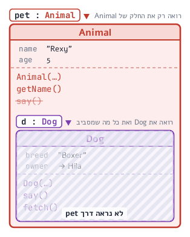
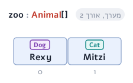
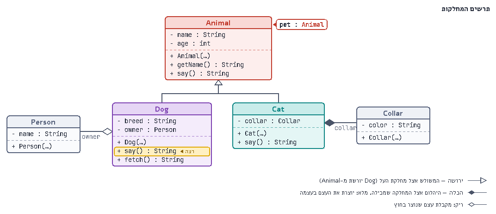

הורשה ופולימורפיזם בהרצה הוויזואלית
מדריך קצר למורים. כשבתוכנית יש מחלקה שיורשת ממחלקה אחרת שהתלמידים כתבו, למשל class Dog extends Animal וב-C# class Dog : Animal, ההרצה הוויזואלית מציירת את העצמים אחרת. מחלקה שלא נמצאת בשום היררכיה נשארת הכרטיס הרגיל. הכול עובד באותה צורה ב-Java וב-C#.
העצם: קופסה בתוך קופסה

Animal pet = d; העצם הוא Dog. דרך pet רואים רק את החלק של Animal.- מחלקת העל בחוץ, וכל מחלקה יורשת בתוך מחלקת העל שלה. הקופסה הפנימית ביותר היא המחלקה של העצם.
- בכל קופסה: המאפיינים שהמחלקה עצמה הגדירה, קו מקווקו, ואז הבנאי והפעולות שלה.
- צבע אחד לכל מחלקה, ואותו צבע בכל מקום שהיא מופיעה: הקופסה, התגית של ההפניה, התא במערך, תרשים המחלקות ומעקב המשתנים. שם המחלקה תמיד כתוב ליד הצבע.
- פעולה שמחלקה פנימית דורסת מסומנת בקו חוצה (בדוגמה:
say()של Animal). ב-C# רקoverrideנחשב דריסה. - בזמן הבנייה הקופסאות מתמלאות מבחוץ פנימה: הבנאי של מחלקת העל רץ קודם, וקופסה שהבנאי שלה עוד לא רץ מעומעמת.
ההפניה היא חלון
- כל משתנה שמצביע על העצם הוא תגית
שם : טיפוס, שיושבת על הקופסה של הטיפוס המוצהר שלו. כמה משתנים על אותו עצם הם כמה תגיות על אותן קופסאות, ולא כמה עצמים. - כשהשורה משתמשת בהפניה שהטיפוס שלה שונה מהמחלקה של העצם, הקופסאות שלא נראות דרכה מכוסות בפסים: "לא נראה דרך pet". זה מה שהמהדר בודק: פעולה שנמצאת רק בחלק המפוספס היא שגיאת הידור, גם אם העצם עצמו יודע לעשות אותה.
- על
thisאין פסים. התגית שלו יושבת על הקופסה של הפעולה שרצה עכשיו, גם כשזו פעולה של מחלקת העל.
"מותר? / מה רץ?"
בקריאה לפעולה שמוגדרת ביותר ממחלקה אחת בשרשרת של העצם, נפתח בראש התצוגה חלון קטן עם שתי שאלות:
- מותר? מה הטיפוס של ההפניה, והאם הפעולה קיימת בו. זו ההחלטה של המהדר.
- מה רץ? החיפוש מתחיל בקופסה הפנימית (המחלקה של העצם) ויוצא החוצה, עד הגרסה הראשונה של הפעולה. בקופסה שהקוד שלה רץ כתוב "◀ רצה עכשיו".
super.say()/base.Say()ממשיך את החיפוש מחוץ לקופסה הנוכחית.
ב-C#, פעולה שלא סומנה virtual (ויש לה גרסה new במחלקה יורשת): החלון אומר שרצה הגרסה של טיפוס ההפניה, ולמה.
המרות ו-instanceof
(Mammal) xשמצליחה, וגםx instanceof Mammal(ב-C#:x is Mammal): הקופסאות של העצם מוצגות יחד עם המחלקה שנבדקה, ואחרי ההמרה מופיע כיתוב מתחת לעצם.- המרה שנכשלת: "שגיאת ריצה: ההמרה לא חוקית", מה העצם באמת ומה אין בו, עץ קטן עם העצם והענף שביקשו, והצעה לבדיקה לפני ההמרה עם השמות של התלמידים (
if (a2 instanceof Boxer)).
מערך של מחלקת העל

בתא של מערך (וגם במחסנית, בתור, בשרשרת ובעץ) אין קופסאות: רק תגית צבעונית קטנה עם המחלקה של העצם ושם קצר. כך רואים בבת אחת ש-zoo : Animal[] מחזיק כלבים, חתולים וציפורים.
תרשים המחלקות

בתחתית התצוגה, כשיש הורשה או הכלה בין מחלקות של התלמידים. הסימנים הם של UML:
- משולש ריק אצל מחלקת העל: ירושה (
Dog extends Animal). - יהלום מלא אצל המחלקה שמכילה: היא יוצרת את העצם בעצמה (
this.collar = new Collar(...)). - יהלום ריק: היא מקבלת עצם שנוצר בחוץ (בפרמטר של הבנאי או ב-set), כמו הבעלים של כלב.
- מחלקה שלא בעץ הורשה מצוירת באפור. ההפניה של השורה (
pet) והפעולה שרצה מסומנות גם בתרשים.
בכיתה: מאגר השאלות
במאגר השאלות (Eclipse, IntelliJ, Visual Studio, VS Code) יש נושא "הורשה ופולימורפיזם", עם שאלות קלות, בינוניות וקשות, כל אחת ב-Java וב-C#:
- מה יודפס? מערך
Animal[]עם פעולה שנדרסת. התלמידים כותבים את התשובה, וההרצה בודקת מול מה שבאמת רץ. - האם קטע הקוד תקין? לכל שורה: תקין, שגיאת הידור או שגיאת ריצה. המשתנים של השאלה כבר מוגדרים ב-main, כך שאפשר להוסיף שורה תקינה או שורה עם שגיאת ריצה ולראות אותה בהרצה.
- כתיבה: דריסה, קריאה ל-
super(ב-C#:base), וספירה עםinstanceof(ב-C#:is).
Java מול C#
| מה | Java | C# |
|---|---|---|
| ירושה | class Dog extends Animal | class Dog : Animal |
| הבנאי של מחלקת העל | super(name); בשורה הראשונה | : base(name) אחרי הכותרת |
| הגרסה של מחלקת העל | super.say() | base.Say() |
| דריסה | כל פעולה שאינה private או static | virtual במחלקת העל, override ביורשת |
| בדיקת סוג | x instanceof Dog | x is Dog |
הכללים המלאים של התצוגה כתובים בראש הקובץ Poly.java בקוד המקור.